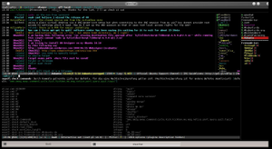

WeeChat
Dieser Artikel wurde für die folgenden Ubuntu-Versionen getestet:
Ubuntu 14.04 Trusty Tahr
Zum Verständnis dieses Artikels sind folgende Seiten hilfreich:
WeeChat  ist ein leichtgewichtiger IRC-Client für die Kommandozeile. Er zeichnet sich durch seinen geringen Ressourcenverbrauch wie auch seine leichte Erweiterbarkeit mit Hilfe von Erweiterungen und Skripten aus. Des Weiteren ist er einer der wenigen IRC-Clienten, die vollständige Socks5-Unterstützung anbieten, was ihn zur Nummer Eins der verfügbaren IRC-Clienten macht, wenn man einen Proxy wie Tor benutzen möchte.
ist ein leichtgewichtiger IRC-Client für die Kommandozeile. Er zeichnet sich durch seinen geringen Ressourcenverbrauch wie auch seine leichte Erweiterbarkeit mit Hilfe von Erweiterungen und Skripten aus. Des Weiteren ist er einer der wenigen IRC-Clienten, die vollständige Socks5-Unterstützung anbieten, was ihn zur Nummer Eins der verfügbaren IRC-Clienten macht, wenn man einen Proxy wie Tor benutzen möchte.
WeeChat unterstützt außerdem SSL-Zertifikate, IPv6, SASL-Authentifizierung, Maus- und Cursoreingaben (ab Version 0.3.6), eine Remote-GUI (ab Version 0.3.7) sowie die Darstellung von 256 Farben (ab Version 0.3.4).
Installation¶
|  |
| WeeChat, mit installierten Skripten (z.B. Bufferanzeige, Buddyliste, Konfig.-Editor und andere) |
Das Programm ist in den offiziellen Paketquellen enthalten. Folgende Pakete müssen installiert [1] werden:
weechat (universe)
weechat-plugins (universe, optional, zusätzliche Erweiterungen)
weechat-scripts (universe, optional, Archiv mit zusätzlichen Skripten)
 mit apturl
mit apturl
Paketliste zum Kopieren:
sudo apt-get install weechat weechat-plugins weechat-scripts
sudo aptitude install weechat weechat-plugins weechat-scripts
Fremdquelle¶
Die Entwickler von WeeChat stellen eine Fremdquelle zur Verfügung. Wie man diese einbindet, kann der Installationsanleitung  direkt von der Projektwebsite entnommen werden.
direkt von der Projektwebsite entnommen werden.
Hinweis!
Zusätzliche Fremdquellen können das System gefährden.
Nach dem Aktualisieren der Paketquellen erfolgt die Installation wie oben angegeben.
Benutzung¶
Nach der Installation kann WeeChat im Terminal mit den folgenden Befehl [2] gestartet werden:
weechat-curses
oder in der neueren Version mit:
weechat
Tastenbelegung¶
| Tastenbelegung | |||
| Tastenkürzel | Funktion | Tastenkürzel | Funktion |
| ← oder Strg + B | Geht in der Eingabezeile ein Zeichen nach links. | → oder Strg + F | Geht in der Eingabezeile ein Zeichen nach rechts. |
| Strg + ← | Geht in der Eingabezeile ein Wort zurück. | Strg + → | Geht in der Eingabezeile ein Wort vor. |
| Pos1 oder Strg + A | Geht zum Anfang der Eingabezeile. | Strg + C dann B | Tastenkombination um fetten Text zu erzeugen. |
| Strg + C dann C | Tastenkombination um farbigen Text zu erzeugen. | Strg + C dann O | Tastenkombination um Text-Modus zurück zu setzen. |
| Strg + C dann R | Tastenkombination um umgekehrt farbigen Text zu erzeugen. | Strg + C dann U | Tastenkombination um unterstrichenen Text zu erzeugen. |
| Ende oder Strg + E | springt an das Ende der Eingabezeile. | Strg + K | Löscht vom Cursor bis zum Ende der Zeile. |
| Strg + L | Zeichnet das Fenster neu. | Strg + R | Suchfunktion, wenn zweimal gedrückt Suche nach dem genauen Text. |
| Strg + S dann Strg + U | Setzt die ungelesen-Markierung in allen Fenstern. | Strg + U | Löscht vom Cursor bis zum Anfang der Eingabezeile. |
| Strg + W | Löscht das voranstehende Wort in der Eingabezeile. | ⌫ oder Strg + H | Löscht das vorangegangene Zeichen in der Eingabezeile. |
| Entf oder Strg + D | Löscht das nächste Zeichen in der Eingabezeile. | Tab ⇆ oder ⇧ + Tab ⇆ | Auto-Vervollständigung. |
| ⏎ oder Strg + J oder Strg + M | Bestätigt ein Kommando bzw. sendet den geschriebenen Text. | ↑ oder ↓ | Ruft das letzte Kommando (Text) des momentanen Fensters wieder auf. |
| Strg + ↑ oder Strg + ↓ | Ruft das letzte Kommando (Text) von allen Fensters wieder auf. | Bild ↑ oder Bild ↓ | Eine Seite hoch / runter im Verlauf. |
| Alt + Bild ↑ oder Alt + Bild ↓ | Ein paar Zeilen hoch / runter im Verlauf. | Alt + Pos1 | Geht zum Anfang des Verlaufs. |
| Alt + Ende | Geht zum Ende des Verlaufs. | Alt + ← oder Alt + → | Geht zum vorherigen / nächsten Fenster. |
| F9 oder F10 | Scrollt das Channel-Topic. | F11 oder F12 | Blättert in der Nickliste. |
Eine Übersicht über die Standard-Tastenkombinationen kann der offiziellen Tastenbelegungsübersicht entnommen werden.
Befehle¶
| Befehle | ||
| Befehl | Beispiel | Beschreibung |
/help [Befehl/Option] | /help connect | Zeigt die Hilfsseite des Connect Befehl. |
/set [Option] | /set weechat.look.day_change | Zeigt die Option weechat.look.day_change an |
/connect [Servername] | /connect irc.ubuntu.com | Verbindet mit einem IRC-Server. |
/join [Channel] | /join #ubuntu | Betritt einen Chat-Raum. |
/list | Listet die Channels eines Servers auf. | |
/buffer close | Schließt ein Fenster. | |
/buffer list | Zeigt alle offenen Fenster. | |
/clear | Leert ein Fenster. | |
/disconnect [Servername] | /disconnect irc.ubuntu.com | Beendet die Verbindung zu einem Server. |
/disconnect -all | Beendet die Verbindung zu allen Servern. | |
Alle Befehle können der offiziellen Befehlsübersicht entnommen werden.
Konfiguration¶
Nach dem ersten Start von WeeChat werden mehrere Konfigurationsdateien im Verzeichnis ~/.weechat/ erzeugt (z.B. ~/.weechat/weechat.conf). Da WeeChat die Konfigurationsdateien selbst bearbeitet und überschreibt, sollte man diese Dateien nicht von Hand editieren, solange WeeChat ausgeführt wird. Möchte man Veränderungen an der Konfiguration durchführen, sollte vorzugsweise der interne /set Befehl, oder aber das wesentlich komfortablere Skript iset.pl, genutzt werden. Die durchgeführten Veränderungen werden dabei sofort übernommen. Ein Neustart von WeeChat ist zu keiner Zeit erforderlich.
Eine Übersicht aller verfügbaren Optionen und deren Bedeutung innerhalb der Konfigurationsdatei findet man auf weechat.org .
Erweiterungen¶
Wenn man das Erweiterungs-Paket installiert hat, kann man die Skripte für WeeChat benutzen. Das Laden, Ausführen und Entfernen von Skripten ist abhängig von der Sprache, in der sie geschrieben wurden und kann auf weechat.org nachgelesen werden.
Vorhandene Erweiterungen sind:
| Erweiterungen | ||
| Erweiterung | Beschreibung | |
| alias | Die Alias-Erweiterung erlaubt es, für Befehle, sogenannte Kurzbefehle (einen Alias) zu erstellen. | |
| buflist | Bar-Item mit der Liste von Buffern. | |
| aspell | Die ASpell-Erweiterung stellt eine Rechtschreibprüfung zur Verfügung. Dabei ist es möglich, mehrere Wörterbücher für einen Buffer zu nutzen. | |
| charset | Die Charset-Erweiterung übernimmt das De-/Kodieren der Zeichensätze. | |
| exec | Ausführen von externen Befehlen aus WeeChat heraus. (Ab Version 1.0) | |
| fifo | Um WeeChat fernsteuern zu können. | |
| fset | Optionen von WeeChat und Erweiterungen schnell und einfach anpassen. | |
| irc | Die IRC-Erweiterung ist konzipiert, um mittels dem IRC-Protokoll mit anderen Menschen zu chatten. | |
| logger | Die Logger-Erweiterung erlaubt es, den Inhalt von Buffern in Dateien zu sichern. | |
| relay | Die Relay-Erweiterung wird genutzt, um Daten mittels unterschiedlicher Protokolle, über ein Netzwerk zu übermitteln. | |
| script | Mit der Script-Erweiterung lassen sich offiziell verfügbare Skripte bequem und leicht verwalten. | |
| secure | verwaltet zu schützende Daten (Passwörter oder private Daten werden verschlüsselt) | |
| trigger | das Schweizer Armeemesser für WeeChat . | |
| perl | Erweiterung, um Perl-Skripte zu laden. | |
| python | Erweiterung, um Python-Skripte zu laden. | |
| ruby | Erweiterung, um Ruby-Skripte zu laden. | |
| lua | Erweiterung, um Lua-Skripte zu laden. | |
| tcl | Erweiterung, um Tcl-Skripte zu laden. | |
| guile | Erweiterung, um Guile (Scheme)-Skripte zu laden. | |
| php | Erweiterung, um php-Skripte zu laden. | |
Skripte¶
WeeChat unterstützt sechs Skriptsprachen: perl, python, ruby, lua, tcl und guile (scheme).
Skripte, welche die Benutzerfreundlichkeit von WeeChat wesentlich verbessern:
| Skripte | ||
| Skript | Beispiel | Beschreibung |
| buddylist.pl | wird bei Installation automatisch ausgeführt | in einer separaten Bar wird der Status Deiner Buddies angezeigt. |
| keepnick.py | /help keepnick | behalte Deinen Nick oder hole ihn dir wieder zurück, falls er gestohlen wurde. |
| buffers.pl | wird bei Installation automatisch ausgeführt | zeigt alle geöffneten Buffer in einem separaten Seitenfenster an. |
| jabber.py | /jabber | Jabber/XMPP-Protokoll (es wird aber bitlbee empfohlen) |
| urlserver.py | /urlserver status | verkürzt lange URLs mittels eigenem HTTP Server. |
| stalker.pl | /help stalker | speichert und korreliert nick!user@host Informationen.. |
 Übersichtsartikel
Übersichtsartikel- Erstellt mit Inyoka
-
 2004 – 2017 ubuntuusers.de • Einige Rechte vorbehalten
2004 – 2017 ubuntuusers.de • Einige Rechte vorbehalten
Lizenz • Kontakt • Datenschutz • Impressum • Serverstatus -
Serverhousing gespendet von